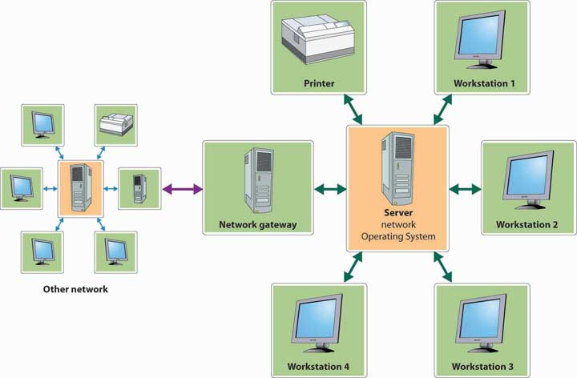

Once it’s grown beyond just a handful of employees, an organization needs a way of sharing information. Imagine a flower shop with twenty employees. The person who takes phone orders needs access to the store’s customer list, as do the delivery person and the bookkeeper. Now, the store may have one computer and everyone could share it. It’s more likely, however, that there are a number of computers (several for salespeople, one for delivery, and one for bookkeeping). In this case, everyone needs to be sure that customer records have been updated on all computers every time that a change is required.
Likewise, many companies want their personal computers to run their own software and process data independently. But they also want people to share databases, files, and printers, and they want them to share applications softwareSoftware that performs a specific task, such as word processing or spreadsheet creation. that performs particular tasks, including word processing, creating and managing spreadsheets, designing graphical presentations, and producing high-quality printed documents (desktop publishing).
The solution in both cases is networking—linking computers to one another. The two major types of networks are distinguished according to geographical coverage:
Figure 15.8 Local Area Network (LAN)
Like the one in Figure 15.8 "Local Area Network (LAN)", some networks are client-server systemsSystem connecting client machines (which are used by employees for data input and retrieval) and a server (that stores shared databases and programs)., which include a number of client machines (the ones used by employees for data input and retrieval) and a server (which stores the database and the programs used to process the data). Such a setup saves time and money and circulates more-accurate information.
There are two systems that can satisfy both needs.
What’s the difference between a LAN and a WAN? Give an example of the use to which each type of system can be put. Does your college maintain either type of computer network?